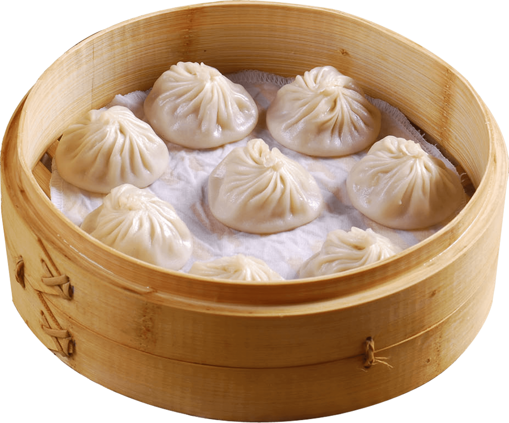

xiao-long-bao

ingredients
jelly broth
- 2.5 to 3 lbs (1.2kg) chicken backs and necks
- 1tbs vegatable oil
- 2.5cm ginger, sliced
- 4 green onions, chopped into 3” (8 cm) pieces
wrappers
- 120 g all purpose flour (2/3 cup plus 2 tablespoons)
- Pinch of salt
- 35 g hot water (2 tablespoons plus 1 teaspoon)
- 25 to 30 g cold water (about 2 tablespoons)
filling
- 1 tablespoon grated ginger
- 8 oz (220 g) fatty ground pork
- 1 tablespoon light soy sauce
- 4 teaspoons Shaoxing wine (or dry sherry)
- 1/4 teaspoon salt
- 1/4 teaspoon suga
- 1/8 teaspoon white pepper
- 4 green onions, finely minced
dipping sauce
- chinkiang vinegar
- very thinly sliced ginger
check out the link below to view the original recipe
click me